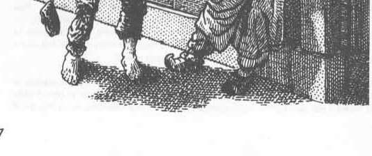

盗贼 · The Thief
盗贼这一行并不算可耻，不过在某些地方也谈不上光彩或受人尊重。盗贼的主要属性是敏捷；角色的敏捷不得低于 9，较高的智力也很有用。敏捷高于 15 的盗贼，可将裁判授予的经验值增加 10%。
翻看前面的“角色属性”一节便会发现，高敏捷也有助于盗贼施展职业能力。下文会逐一详述这些能力。
盗贼全都属于中立或邪恶阵营，不过极少数也可能是中立善良；在守序与混乱方面则不受限制。多数盗贼倾向邪恶。
盗贼主要靠机巧与潜行取物。他们使用六面生命骰（d6），但能穿轻型（皮革）护甲，也能使用不少武器。盗贼正面战斗只比魔法师略强，却能在战斗中充分发挥潜行优势，从背后偷袭；此能力将在后文说明。
盗贼的主要能力是：1）扒窃，2）开锁，3）发现／拆除陷阱，4）无声移动，5）藏于阴影。这些名称基本已经说明其用途。每项行动的成功率取决于盗贼的能力等级；扒窃还会受目标经验等级调整，藏于阴影则会受观察者能力影响。
各项能力详述如下：
- 扒窃 Pick Pockets。不仅包括从口袋下手，也包括衣褶或腰带等处，还涵盖顺手牵羊、偷走小件物品之类的举动。所凭的是轻巧触碰与手上戏法。
- 开锁 Open Locks。包括设法打开滑动式机关锁，以及破解魔法封闭。盗贼会借助工具、机智，以及对这类装置的知识与研究来完成。
- 发现／拆除陷阱 Find/Remove Traps。针对的是较小型的机械装置，例如毒针、弹簧刀刃等。盗贼通过检查发现陷阱，再以机械方式拆除或使其失效。
- 无声移动 Move Silently。使盗贼尽量不发出声响、也不惊动周围；哪怕走过吱呀作响的木地板也能做到。这项能力会随经验提高。
- 藏于阴影 Hide in Shadows。使盗贼融入暗处、贴伏身体，并在已进入他人视线时保持不动，从而不被察觉。这项能力依靠衣着与练习。
盗贼的次要能力是：1）贴门聆听，探查门后的声音；2）攀上或爬下墙壁等垂直表面；3）盗贼行事时若撞见旁人，可从背后偷袭对方。
- 贴门聆听也包括在窗户等其他出入口做同样的事。盗贼须悄无声息地走近，把耳朵贴在门上分辨声响。
- 攀上或爬下垂直表面，就是盗贼沿墙面上下攀爬的能力；规则假定墙面粗糙，并有凸缘或裂隙可供手脚借力。
- 背后偷袭是从目标身后以棍棒、匕首或剑发动打击。每四个盗贼经验等级，单次命中造成的伤害便增加一倍：第 1 至 4 级为双倍，第 5 至 8 级为三倍，第 9 至 12 级为四倍，第 13 至 16 级为五倍。请注意，从背后出其不意地攻击还会使命中概率提高 20%（盗贼的命中掷骰获得 +4）。
盗贼还会获得以下能力：
- 无论阵营如何，所有盗贼都有自己的语言——“盗贼黑话”。除因种族或智力而习得的其他语言外，盗贼还会说这种黑话。
- 第 4 级（夜盗）时，盗贼有 20% 的概率读懂文字；此后每升一级增加 5%，最高达到 80%。因此，他们有可能无需借助魔法物品或法术，便读懂说明文字与藏宝图。
- 第 10 级（盗贼大师）时，盗贼能够辨读魔法文字并使用各种卷轴；牧师性质的卷轴除外，但德鲁伊卷轴不在禁用之列。不过，盗贼并未真正通晓魔法，因此有 25% 的概率误解文字。念诵卷轴法术时也可能读错；法术环级越高，效果与原意相反的概率就越大。
上述主要、次要和其他能力，均列在后面的表格中。
盗贼不能像某些职业那样建立要塞。不过，为了自身安全，他们可以建造一座塔楼或小型城堡式防御建筑（见相关条目）；但建筑必须位于城镇或城市之内，或距其不超过一英里。
第 10 级或更高的盗贼可以把自己的小型城堡式建筑用作盗贼团伙的总部，从而吸引 4 至 24 名其他盗贼。但此举会招致当地盗贼公会的敌意；公会将设法铲除这个竞争组织。冲突一旦开始，只有当一方或双方所有盗贼大师全部死亡，或盗贼角色迁往别处时，争斗才会结束。

上一节：幻术师 · The Illusionist
下一节：盗贼能力表注释 · Notes Regarding Thief Function Table